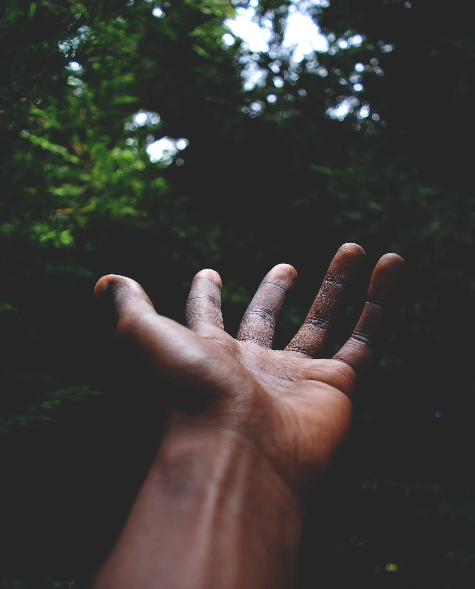

My HomeTown. . .
Born and Raised in a small agriculture based town in North Egypt called Belqas.. Surrounded by long road networks, thus gave me roads loving attitude.
Born and Raised in a small agriculture based town in North Egypt called Belqas.. Surrounded by long road networks, thus gave me roads loving attitude.
The technical needs of business today requires a varied blend of creative and technical skill sets. We bring together custom business logic and graceful web design. Want to make mobile-first apps where your customers can buy, order or contact your firm on the fly? No problems ; we got you covered by ensuring your app works on any device with internet connection.
Know exactly what you're looking for? Great! Let's talk about business. Technical skills are not your thing; do not worry; we are here to design, create, and convert awesome UI, UX designs into real world web sites so your shop or gallery shine.
There are lots of technical hurdles to hold back your successful business; we are here to help and maintain your existing website and boost the traffic and give your customers and users the UX they deserve. All made with love.